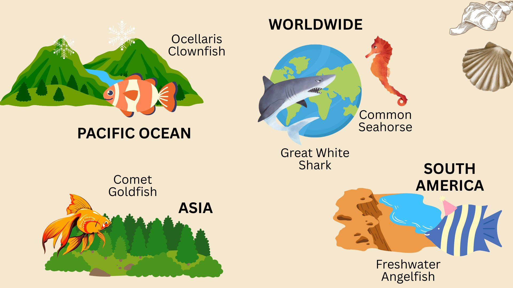

FISH
Fish are cold-blooded aquatic animals that typically have gills for breathing underwater, scales covering their bodies, and fins for swimming. They are the most diverse group of vertebrates, ranging from tiny minnows to massive sharks and rays. Fish live in a variety of water bodies including oceans, rivers, lakes, and streams.
Fish reproduce mainly by laying eggs, though some give birth to live young. They have evolved specialized senses to navigate and survive underwater, such as lateral lines to detect movement and electric fields. Fish play essential roles in aquatic ecosystems and are a major source of food for humans and other animals.
Fish reproduce mainly by laying eggs, though some give birth to live young. They have evolved specialized senses to navigate and survive underwater, such as lateral lines to detect movement and electric fields. Fish play essential roles in aquatic ecosystems and are a major source of food for humans and other animals.
